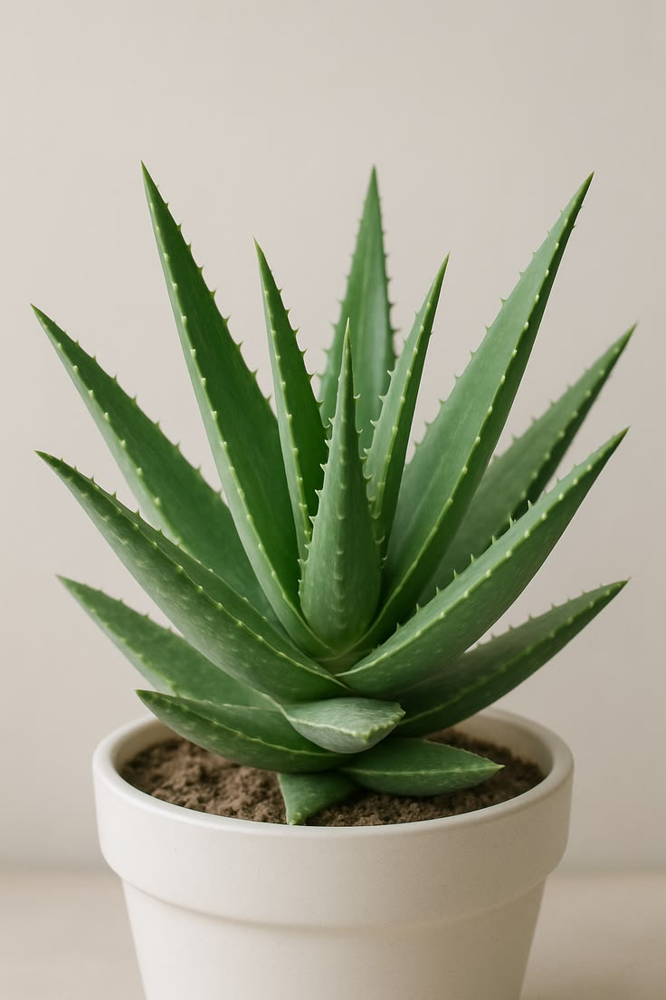
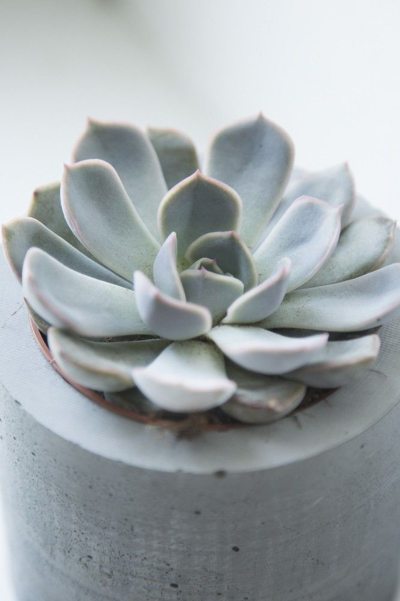
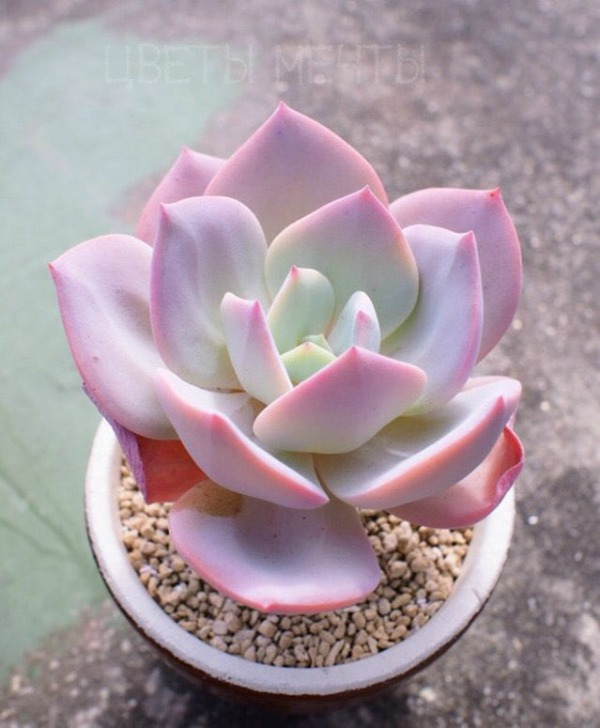

Мир суккулентов
Что такое суккуленты?
Суккуленты — это растения, которые приспособились запасать воду в своих
листьях, стеблях или корнях. Благодаря этому они могут выживать в засушливых
условиях и не требуют частого полива.
Навигация по странице:
Виды суккулентов |
Уход |
Списки |
Вниз страницы
Виды суккулентов
Суккуленты делятся на несколько групп по типу запасания воды.
- Листовые суккуленты — запасают воду в листьях (алоэ, эхеверия, хавортия).
- Стеблевые суккуленты — запасают воду в стеблях (кактусы, молочаи).
- Корневые суккуленты — запасают воду в корнях (некоторые виды литопсов).

Алоэ — один из самых известных листовых суккулентов.
Уход за суккулентами
Суккуленты неприхотливы, но есть несколько правил, которые важно соблюдать.
- Полив: редко, но обильно, только когда почва полностью просохла.
- Освещение: большинство суккулентов любят яркий свет.
- Почва: рыхлая, с песком или перлитом.
- Температура: комнатная, зимой — прохладнее.

Эхеверия — популярный суккулент с розеткой листьев.
Полезные списки
Популярные суккуленты по категориям:
- Листовые:
- Стеблевые:
- Корневые:
Большая фотография
Нажмите на миниатюру, чтобы открыть большое изображение в новом окне и рассмотреть эхеверию:
